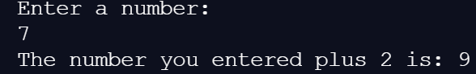

Printing
What is printing?
The most basic form of printing in Java is printing to the console. The console is essentially a little box that runs your progam. Through the console, a user can interact with a program by typing text, and the program responds by printing to the console.
Basic Printing
While reading in something from the console is difficult, printing to the console is quite easy.
System.out.print("Hello World!");This line of code will print Hello World! to the console. This code will print any string of characters in between the quotation marks.
Printing New Lines
Using the System.out.print(""); line multiple times will result in all the text being printed on the same line. Using System.out.println("") will instead print a new line after your text. Observe some examples below:
| Code | Output |
|---|---|
| System.out.print("Hello!"); System.out.print("Hello!"); System.out.print("Hello!"); | Hello!Hello!Hello! |
| System.out.println("Hello!"); System.out.println("Hello!"); System.out.println("Hello!"); | Hello! Hello! Hello! |
| System.out.print("Line 1"); System.out.println("Line 1"); System.out.print("Line 2"); | Line 1Line1 Line 2 |
Remeber that System.out.println(""); prints a new line AFTER the text.